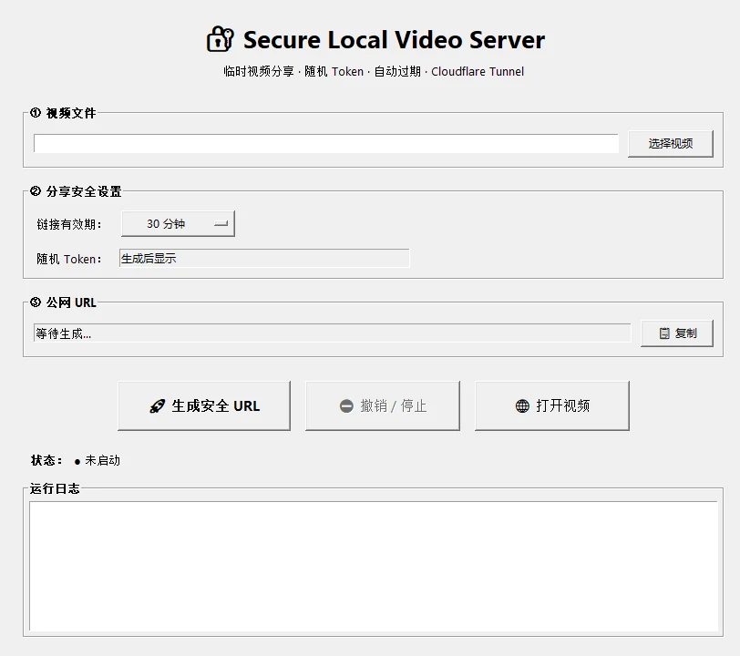

PROJECT 02 — LOCAL SERVER
临时视频链接 VIDEO LINK SERVER
把本机上的视频变成一个临时链接，发出去就能看；到点自动失效，也可以随时收回。

它做什么
选一个视频，点开始：本地起一个只监听 127.0.0.1 的小服务，再用 cloudflared 开一条隧道，生成一个带 32 位随机 token 的链接。默认 1800 秒过期，倒计时就在窗口里；不想等了，点一下撤销，链接立刻作废。
对方在浏览器里直接播放，不用登录、不用装东西，也能拖动进度条。
怎么做的
界面是 Tkinter。Flask 只做三件事：校验 token、校验过期时间、按 Range 返回视频分片。Range 是关键——没有它，浏览器就只能从头播，拖不动。
cloudflared 作为子进程启动，退出时一并关掉，避免留下僵尸隧道。链接里的 token 每次重新生成，不复用。
链接会过期，分享这件事也就有了分寸。
踩过的坑
- 隧道建立要几秒，这期间链接是打不开的，界面必须说清楚「正在开门」。
- 每次启动域名都不同，不能把旧链接写死在任何地方。
- Windows 防火墙第一次会弹窗，拒绝之后整个服务都连不上，得给一句人话提示。
- 免费隧道带宽有限，太大的文件会让对方以为「卡死了」。
安装包同样用 Inno Setup，安装完会在开始菜单留一个入口，卸载时结束进程。